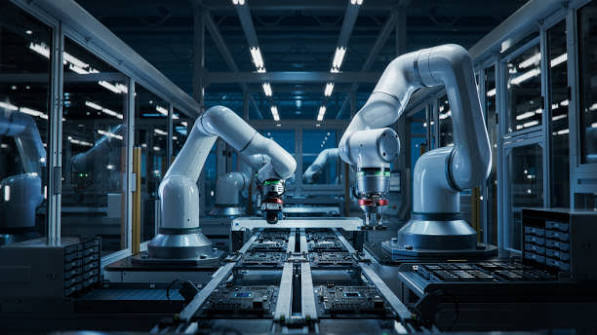

.jpg)
.jpg)
.jpg)
Dans le cadre du Club Robotique, notre projet consiste à concevoir et développer un robot intelligent capable d’exécuter différentes tâches de manière autonome. Ce projet nous permet de mettre en pratique nos connaissances en programmation, électronique et mécanique, tout en développant notre créativité et notre capacité à résoudre des problèmes. À travers ce travail, nous cherchons à créer une solution innovante, fonctionnelle et évolutive, tout en travaillant en équipe et en découvrant les nouvelles technologies liées à la robotique.

Cette image représente un environnement industriel moderne dans lequel plusieurs bras robotiques travaillent de manière automatisée sur une chaîne de production. Ces robots sont capables d’effectuer des tâches précises et répétitives, ce qui permet d’améliorer la rapidité, la précision et l’efficacité de la production. Elle illustre parfaitement l’importance de la robotique, de l’automatisation et de l’intelligence technologique dans l’industrie du futur.